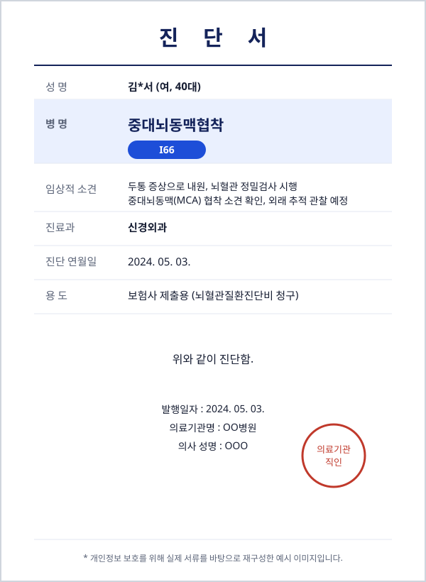

중대뇌동맥협착(I66) 진단에 대한 뇌혈관질환진단비 지급 사례
문의내용
두통 등의 증상으로 병원에 내원해 정밀검사를 받은 결과 중대뇌동맥협착 진단을 받으셨습니다. DB손해보험에 가입한 뇌혈관질환진단비를 청구하는 과정에서, 뇌경색으로 이어지지 않은 협착 소견이라는 이유로 보험사가 지급에 소극적인 상황이어서 상담을 요청하셨습니다.
진단서

진행 과정
병원의 진단서와 소견서 등 관련 자료를 근거로 중대뇌동맥협착이 뇌혈관질환진단비 지급 대상에 해당한다는 근거를 정리했습니다. 이를 바탕으로 보험사에 자료를 제출하고 협의를 진행했습니다.
결과
협의 끝에 중대뇌동맥협착에 대한 뇌혈관질환진단비를 정상적으로 지급받으실 수 있었습니다.